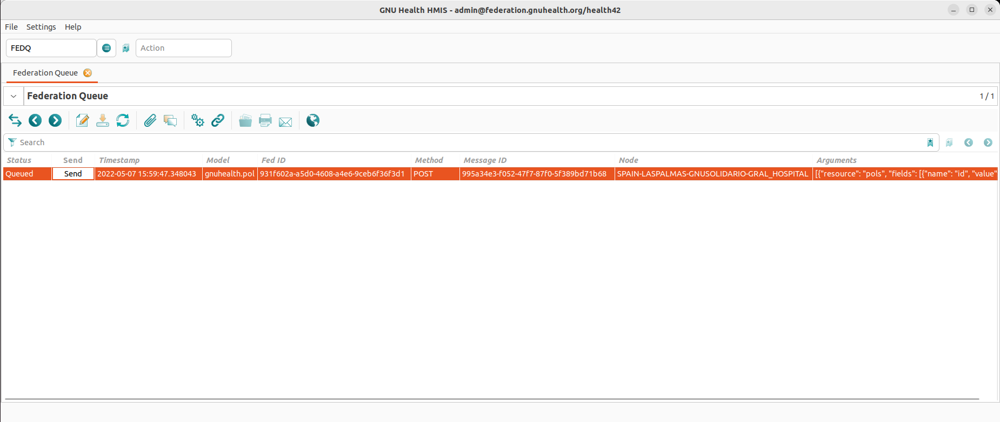
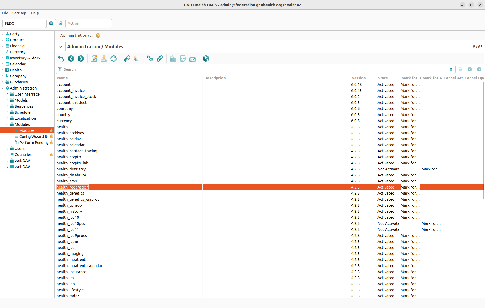

Federation
Important
One World, One Health: Welcome to the GNU Health Federation !
Introduction
Genetic disorders, cancer, neurodegenerative conditions and autoimmune diseases are some formidable and elusive challenges that the world faces today. In the areas of genomics and precision medicine, many natural variants are of unknown clinical significance, that is, we still don’t know how pathogenic they are or the role they will play on our health. Moreover, and most importantly, socioeconomic determinants are still behind of 50% of maladies.
It’s important to conceive health as the result of the interaction from multiple factors and actors. The GNU Health federation puts together and contextualize the information on a person biology, family history, lifestyle and environmental / socioeconomic status. We can no longer only focus on the molecular basis of health and disease, disregarding the environment, social condition and lifestyle of the individual, or vice-versa. If we really want to make a revolution in our system of health, and in the health of upcoming generations, we must work in a trans-disciplinary manner, with a holistic approach to the person. With this global vision, and with all the information gathered across the participating nodes of the federation, we will be closer to identify the significance of those natural variants and, hopefully, we will find a cure.
The GNU Health Federation project aims to build a community based, federated health network among different regions and in a country, and, why not, among countries around the globe. A federation can be as large as you want. From a small regional federated network with several nodes, to a large, nationwide health network with thousands / millions of participating nodes.
The current problem
Most EMR / HIS are transactional systems. They work on specific frameworks, generating transactions / processes on the institution and storing the information on their local database. Some examples are medical encounters, prescriptions, hospitalizations, stock management or billing. The main objective is to “get the job done”.
Even though this approach can work at local level (eg, a particular health institution), it has some intrinsic issues, to know:
Interoperability problems: Most systems are designed to work on that specific framework, making it hard for other environments to exchange information
Data Analysis problems: Transactional systems usually don’t excel in reporting. The user normally has to write specific reports, and on-the-fly reporting / or data analysis is not trivial, and it takes a big toll on performance, impacting on the normal operation of the institutions.
Data isolation: Today there are a lot of silos in health informatics. Each institution has its own system / systems, completely alienated from others. This isolation generates very limited benefits for the public health system.
Benefits
These scenarios resulted in the design of a new approach, that I call the GNU Health Federation model. This new approach should overcome this issues, since it combines the strength of transactional models for the daily operation and needs of institutions with the power of NoSQL for the documental / reporting / aggregation. The following are a summary of benefits of the Federation model
Autonomy: Each node can work independently
Interoperability: Each node can use its own technology . For instance, the HIS node, mostly used in the hospitals can co-exist with a mobile application, or with a research institution, each of them use different technology and frameworks, yet their results can be shared among them.
Selectivity: Each node decides which information to share in the federation.
Scalability: The data coming from the different nodes will be collected and processed in a set of NoSQL databases. This allows growing without impacting the the performance of transactional daily operations of each node.
High Availability : Since each node is independent, the high availability at local level is guaranteed. Moreover, the NoSQL / document oriented databases allow replication to ensure both high availability and load balancing.
Big Data: The GNU Health federation model allows storing very large amount of data, where aggregation, data analysis and reporting can be done in real time.
Standard based: In order to integrate all the nodes participating in the Federation, they have to “talk” a common language.
Trans-disciplinary cooperation : Different entities (the person, health professionals, researchers , social workers, .. ) are all active members of the federation, with the particularity of both being independent but yet, an integral part of the network.
Components

Each GNU Federation is made of three main components:
Nodes : Each autonomous participant on the federation (HIS, LIMS, PHR, mobile devices) is a node.
GNU Health message server (Thalamus) : Middle man between the nodes and the Health Information System. It also controls the access level of each node / person to different objects.
GNU Health Information System: A Document oriented database that holds the Person Master Index, demographics, medical information and the Pages of Life.
Integration of GNU Health HIS node
The traditional GNU Health HIS is now integrated to the GNU Health Federation. Most of the information coming out from daily medical practices can now be sent to the Federation, and be shared across the network.
Currently there are two main blocks where the information can be shared from the HIS node :
Demographics : Main demographic information about the person (dob, gender, address… )
Book of Life : Any relevant event on the person’s life, from biographical, medical, social or demographic
Asynchronous communication


One important and key aspect of GNU Health federation is that each node is autonomous. That is, they don’t need a network to function independently. In many places the information gathered can not be sent immediately due to network outages or lack of communication. In other cases, the information needs to be validated before sharing it with the other nodes.
The HIS node keeps the information generated on the Federation Queue that can be send later on to the GNU Health Information System
To access the Federation Queue manager, you can type in the command FEDQ
Requirements : In order to use the Federation functionality from the HIS, you need to install the health_federation package of GNU Health
Setting up the HIS node
In order for the Health Management Information System (HIS) to be part of the GNU Health Federation the following main steps must be done :
Install the Health Federation package (
health_federation)Create the health institution
Configure the communication parameters to Thalamus, the message server
Install the Health Federation Package


Select the health_federation module and mark it to install.
For more information about installing packages on the HIS node, please refer to the general installation section.
Create the Health Institution
The Federation uses the name of the health institution as part of he default node identifier process. You should have it already in place, since it’s part of the basic setup of the GNU Health HIS, regardless of the Federation installation. Follow this link for more information on the creation of Health Institutions